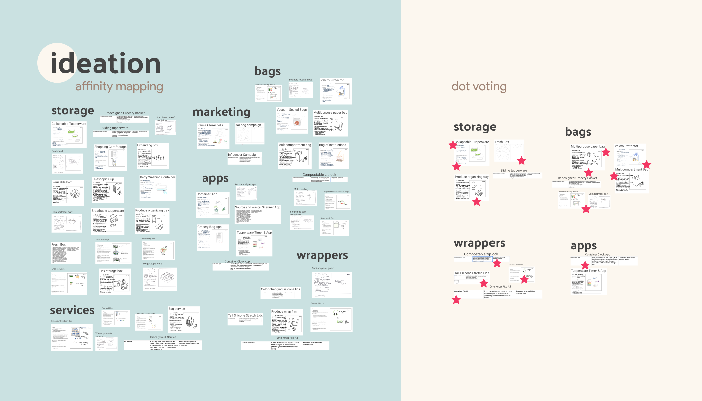

JAMES
HUA.


STORECORE.
A convenience-focused user research case study carried through four different phases of design thinking to create a product that expands the limits of food storage/packaging. Over the course of three months, I worked collaboratively in a team of four to discover new opportunities, define a problem statement, generate and develop innovative concepts, and finally, deliver a prototype of that concept.
As part of this team, I contributed my visual design and prototyping skill, while honing my research and synthesis methods along the way. By learning from my teammates, I gained exposure to a wide breadth of methods, and expanded my set of design tools. These methods are listed below.
Team
Stephanie Xiao
Daisy Nguyen
Dylan Goetting
Skills
1:1 Interviews
Competitor Analysis
Concept Generation
Affinity Diagramming
Weighted Matrix
Rapid Prototyping
3D Modeling
Programs
Figma
Blender
Timeframe
Feb.'21 -
May.'21
Phase 1: Discover
Our team began our journey by fully grasping the opportunity space at hand. We wanted to all explore areas related to food packaging, and of course, this is a vast topic with many avenues. So, we performed online research into what SET factors (social, economic and technological) and stakeholders surround this space. We saw that:
- 1. Consumers had a strong personal desire to contribute to sustainable options.
- 2. Distributors of food packaging, including grocery stores/farms and restaurants, had to consider higher costs of sustainable packaging as well as government regulations.
From this, we noted that there exists a wide scope of problems ranging from single use plastics for produce to take-out containers from restaurants. Moving forward, we brainstormed 25 opportunity statements to pursue, then narrowed down based on feasibility, sustainability and convenience.
Our initial statement became:
HOW MIGHT WE MITIGATE THE RELIANCE ON PLASTIC IN PRODUCE CONTAINERS (I.E.: STRAWBERRY BOXES, PRODUCE BAGS)?
Phase 2: Define
To gain deeper insights into the opportunity gap, we conducted 1:1 interviews with distributors (local grocery stores/farms), and consumers. Additionally, we performed observational studies to understand how workers interacted with these containers in store, and how consumers carried their produce from store to home.
Though distributors were interested in sustainability, yet they had limited ability to disrupt a supply chain that suited everyone’s needs. These chains provided containers optimized for freshness, safety and efficiency, with limited alternatives. At this point, we realized that there was no space to further pursue this specific opportunity on the distributor end. We shifted focus towards consumers and the pain points of storage/space efficiency they had expressed.
Once more, we revised our statement:
HOW MIGHT WE MAKE REUSABLE PACKAGING MORE CONVENIENT FOR USERS TO USE?
To understand our key product requirements, we took a look at existing competitors in this space and generated a value opportunity analysis. This analysis specifically emphasized having a high-quality product, using a space-efficient core technology, and empowering users to make sustainable choices.
- MUST: sturdy, sanitary, reusable, space-efficient
- SHOULD: lightweight, cost-efficient
Our team created three personas with different backgrounds and needs to understand the audience we are designing for.
Phase 3: Develop
We used the requirements, as well as design heuristics, to inform and inspire our concept generation phase. For example, I applied the idea of ‘repurposing’ to paper bags to generate a concept of a paper bag that can be folded into a storage container. To take it a step further, we used 3:12:3 brainstorming to collaboratively produce and share ideas. Overall, we came up with 52 ideas — some good, others… not so good, but that’s where our concept selection came into play.

After reading through all ideas, we came up with six distinct clusters: Boxes, Bags, Wrappers, Services, Apps, and Marketing Strategies. We then affinity mapped to merge our ideas and sort them into these clusters. Finally, we used dot voting to select a few of our top candidates.
To narrow down on our top candidate, we created a weighted matrix and ranked each top idea based on our key requirements. This process left us with two ideas to test out: and Adjustable Silicone Stretch Lids (left) Multi-compartment Bag (right).
We developed rapid prototypes of the two to address our critical question: Is this product easy to use, and does it provide an added convenience factor for them?
Through six rounds of preliminary usability tests we found that users preferred the Adjustable Silicone Stretch Lids because they provided the most convenience in terms of time, space and ease of use.
Phase 4: Deliver
Finally, we would like to introduce to you our final product prototype. Storecore: expanding the limits of food storage.
Storecore boasts three key features:
- 1. Durable & washable material to last long and promote sustainability through reusability
- 2. Adjustable & thin accordion-fold body to perfectly contain food within, and maximize space efficiency and lightweightedness
- 3. Solid lid & sturdy body to securely protect the food within
Future Directions & Reflection
Moving forward, if we had more time, I would have loved to explore the potential of different materials. Our usability testing only addressed critical usefulness concerns, like how a user would go above attaching it, extending it and using it. It did not address the ability of the prototype to perform. I believe that creating a functional prototype and testing out materials like silicone, plastic, wood and more would lead to interesting developments for our product.
Throughout the course of this project, my team and I dealt with several challenges: changes to our opportunity space and the development of a physical project during a virtual semester being some of them. Regardless, I've had so much fun learning from my teammates. I've been able to grasp new design methodologies, pitch exciting ideas, hear from different perspectives, and get proven wrong. I've gained a greater sense of flexbility and empathy for those around me by interacting with not just my teammates, but connecting with the stakeholders of our project.